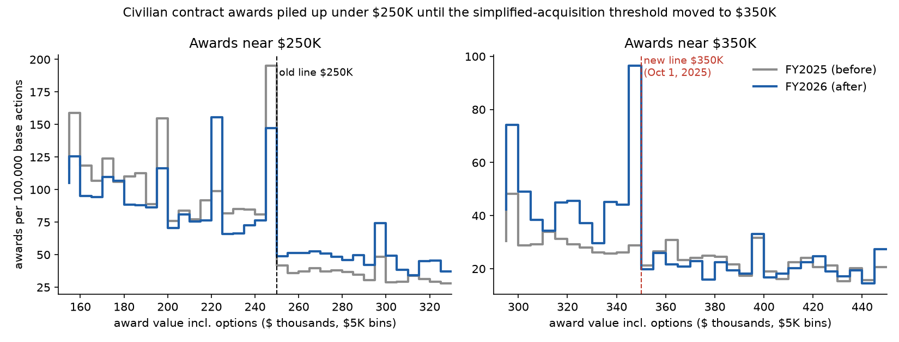
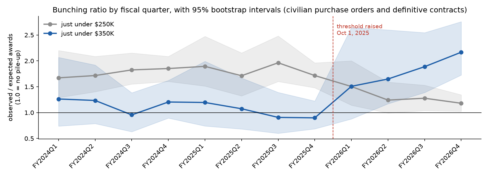
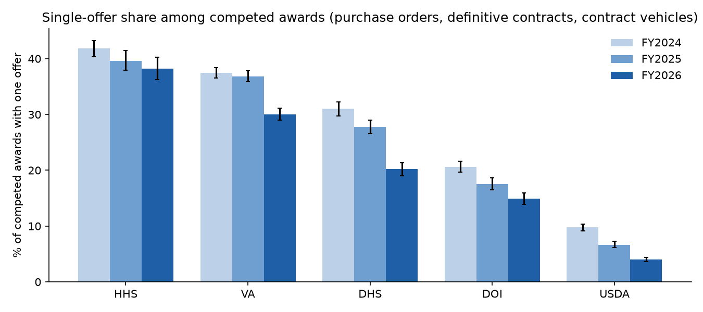

How often do competed federal contracts get only one bid, and do purchases bunch under dollar limits? Five civilian departments (VA, HHS, DHS, Interior, USDA), fiscal years 2024–2026. Department of Defense not included.
By Ellie Burress · data through Sep 30, 2026 · code and data · methodology

On Oct 1, 2025, the simplified-acquisition threshold rose from $250K to $350K. The pile-up just under $250K fell from 1.79 to 1.24, and a new one formed under $350K (0.97 → 1.95). Comparison lines at $200K and $450K, where nothing changed, did not move.

Bunching ratio by fiscal quarter, with 95% intervals. Civilian purchase orders and definitive contracts.

| Department | Single-offer share | Competed awards | FY2024 → FY2025 → FY2026 |
|---|---|---|---|
| Health and Human Services (HHS) | 40.3% | 9,592 | 41.8% → 39.6% → 38.2% |
| Veterans Affairs (VA) | 35.3% | 27,017 | 37.4% → 36.8% → 30.1% |
| Homeland Security (DHS) | 26.5% | 15,149 | 31.0% → 27.8% → 20.2% |
| Interior (DOI) | 17.9% | 15,879 | 20.6% → 17.5% → 14.9% |
| Agriculture (USDA) | 6.5% | 30,006 | 9.8% → 6.7% → 4.0% |
Tap a column heading to sort. Competed awards with a usable offer count (purchase orders, definitive contracts and contract vehicles).
| Department | Award type | Single-offer share | Competed awards |
|---|---|---|---|
| DHS | Definitive contracts | 27.9% | 1,116 |
| DHS | Contract vehicles (IDVs) | 7.4% | 978 |
| DHS | Purchase orders | 27.9% | 13,055 |
| DOI | Definitive contracts | 12.3% | 1,959 |
| DOI | Contract vehicles (IDVs) | 9.2% | 801 |
| DOI | Purchase orders | 19.3% | 13,119 |
| HHS | Definitive contracts | 32.4% | 849 |
| HHS | Contract vehicles (IDVs) | 10.2% | 908 |
| HHS | Purchase orders | 44.7% | 7,835 |
| USDA | Definitive contracts | 3.1% | 8,836 |
| USDA | Contract vehicles (IDVs) | 0.8% | 13,537 |
| USDA | Purchase orders | 20.6% | 7,633 |
| VA | Definitive contracts | 18.7% | 3,278 |
| VA | Contract vehicles (IDVs) | 30.6% | 3,466 |
| VA | Purchase orders | 38.8% | 20,273 |
| Set-aside type | Single-offer share | Competed awards |
|---|---|---|
| no set-aside | 41.1% | 35,351 |
| other/blank | 37.2% | 1,475 |
| WOSB/EDWOSB | 21.8% | 243 |
| 8(a) | 20.3% | 172 |
| VOSB | 16.4% | 122 |
| other | 16.1% | 2,492 |
| SDVOSB | 14.8% | 10,117 |
| small business | 10.8% | 47,547 |
| HUBZone | 7.3% | 124 |
Awards open to everyone (no set-aside) drew a single offer far more often than small-business set-asides.
| Forecast | What it predicts | Resolves | Result |
|---|---|---|---|
| PIO-F1 | Chance of a single offer for each of 150 open civilian solicitations | Jan 31, Feb 28, Mar 31, 2027 | Pending |
| PIO-F2 | FY2027 Q1 pile-up under $350K: 2.03 (80% range 1.40–2.66); under $250K: 1.23 (0.88–1.58) | Feb 28, 2027 | Pending |
Both forecasts were sealed on Oct 24, 2026, before any outcome existed. Fingerprints (SHA-256): PIO-F1 a8d1bb3319bf2fc1439550ee99c971742408a99a4772db426b26dec15f0657d2 · PIO-F2 5a7009ba0f17e953bd1fea32d2b7fe9241a849b85222266506c5312e4790c43b. PIO-F2 is published in full; PIO-F1 will be posted unchanged when it is scored.